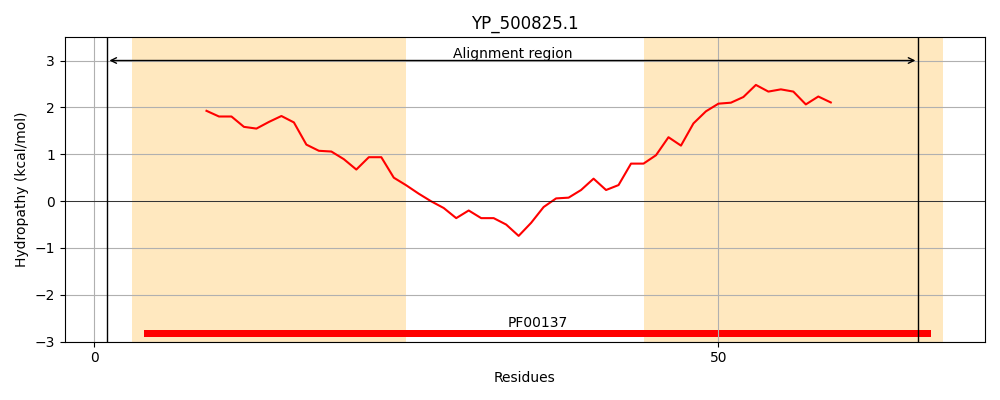
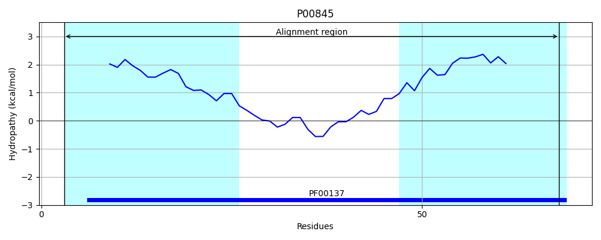
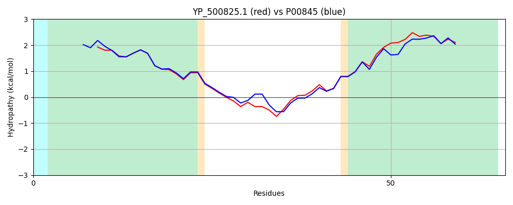

Hit Accession: P00845
Hit TCID: 3.A.2.1.14
Hit Description: gnl|BL_ORD_ID|8181 gnl|TC-DB|P00845|3.A.2.1.14 ATP synthase subunit c OS=Bacillus sp. (strain PS3) OX=2334 GN=atpE PE=1 SV=1
Mach Len: 66
e:0.000000
Query TMS Count : 2
Hit TMS Count: 2
TMS-Overlap Score: 2.250000
Predicted Substrates:CHEBI:5584;hydron
BLAST Alignment:
| Protein Hydropathy Plots: | |
|---|---|
|  |  |
Pairwise Alignment-Hydropathy Plot: | |
|  | |